Logic Games Online
Cubic Logic Question Game
This logic puzzle game improves reasoning, spatial perception, and counting skills.
Logical Game
This logic game improves short-term memory, visual attention and naming skills.
Logic Game Online
This logic puzzle online improves visual attention, visual scanning, and comparison skills.
Free Logic Games
This online logic puzzle improves reaction control, focusing, and divided attention
Logical Reasoning Game
Online logic games? With simple skills, this game can become an amusement park! It improves visual scanning, planning, and spatial memory skills.
Kids Logic Game
Get some handy logic practice with these logical games that test your logic skills. It improves visual memory, aural memory, and decision-making skills.
Logic Game for Kid
If you like fun logic puzzle games then give this logic balls game a go. It improves visual attention, sustained attention, and focusing skills.
Online Logic Game
This logic puzzle game improves visual attention, visual tracking, and comparison skills.
Kids love—parents trust. Named among the best in family-friendly products by U.S. Teachers and Moms.
The convenience of MentalUP’s content to the UK curriculum has been proved by the Education Alliance Finland.
MentalUP has been qualified to get EVIDENCE of IMPACT Award by University College London for its academic contribution.
Loved by over 10 million users. Join millions of parents, teachers, and kids all around the world.
It’s a safe, fun world for kids. There are no ads or inappropriate content either.

Logical Reasoning Games
Fun Logical Game
Looking for math logic games? This math puzzle perfect for 3rd and 4th-grade students.
Face Memory
These logic questions are all about reasoning and memorizing the faces. Let’s try and have fun!
Logical Reasoning for Kids
This fun logic game improves reasoning, planning and visualization skills.
Basic Logic for Kids
This hard logic puzzles improves divided attention, reaction control, and sustained attention.
Logic Puzzles for Kids Online
This puzzle and logic game improves visual recognition, conceptualization, visual attention skills.
Logical Reasoning Game
This logic for kids improves visual scanning, comparison, and planning skills.
Hard Logic Game
Play this brain logic game to improve your attention, reaction control, and focusing skills.
Easy Logic Game
These fun logic games for kids improve visual attention and counting skills.
Logic Puzzles Online
Tricky Logic Puzzle
Logic puzzles for kids like this one are important for developing children’s visual scanning, and planning skills.
Fun Logic Game
You can improve kids’ processing speed skills thanks to online logic games and this special game is designed for the purpose.
Online Logic Puzzle
This game is approved by experts like our other puzzle games for kids that provide empowering their logical thinking skills.
Fast Logic Game
You can use free online logic puzzles for boosting your kids’ comparison and math skills. Try and see for yourselves!
Logic Questions for Kids
Find the Answer and Prove Yourself
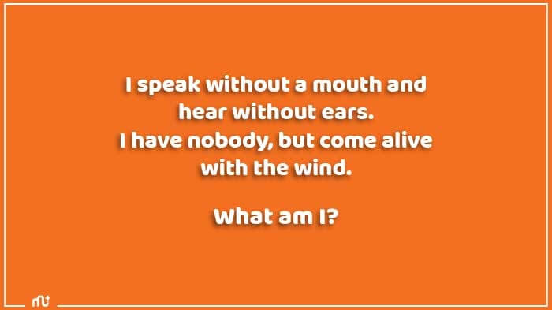
I speak without a mouth and hear without ears. I don’t have a body but come alive with the wind.
What I am?
You just have a tiny hint about wind to encourage you to think broadly and avoid the literal. Logical thinking puzzles like this expand your horizon.
The answer is an ECHO.
Guessing Logic Question
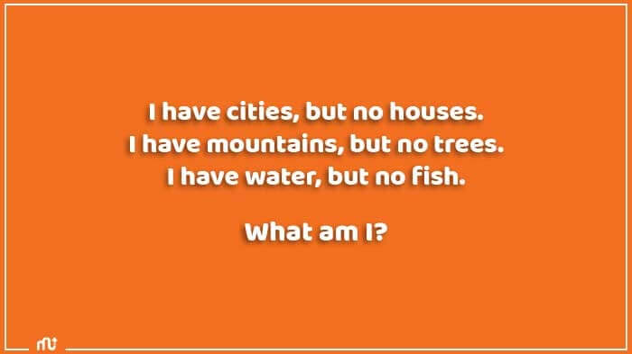
I have cities but no houses. I have mountains but no trees. I have water but no fish.
What I am?
To solve logic problems like this, you need to focus carefully. If you concentrate on the missing things which are the houses, trees, and fish, you might guess you need to think about something inanimate.
The answer is to be a map.
Fun Logic Puzzle
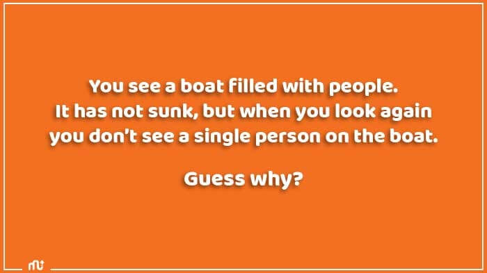
You see a boat filled with people. It has not sunk, but when you look again, you don’t see a single person on the boat. Guess why?
Don’t forget logical puzzles for kids are a really entertaining way of spending time.
Did you answer it correctly when having fun? The answer is because all the people were married.
Challenging Logic Question
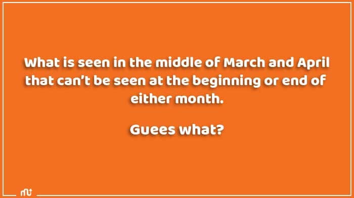
What is seen in the middle of March and April that can’t be seen at the beginning or end of either month? Can you solve it?
This question works by trying to get you to think about the weather or holidays or other events linked to a calendar. But to get this one right you actually need to be super literal.
The answer is to be the letter “R”.
Tricky Online Logic Puzzle
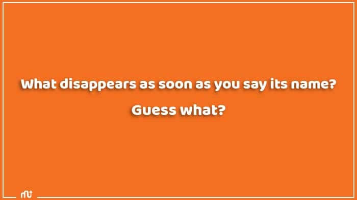
What disappears as soon as you say its name? Guess what?
The answer seems so simple but not until you’ve figured it out! Before that moment, it’s got your brain in a twist.
The answer is SILENCE.
Logic Question for Kids
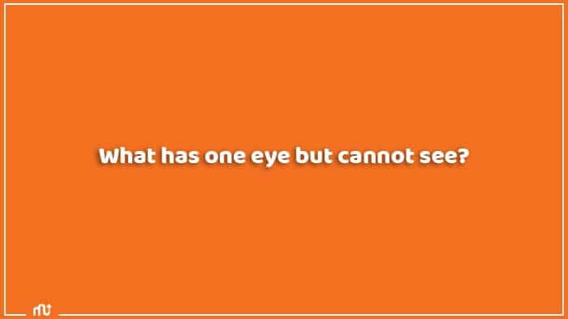
What has one eye but cannot see?
The answer is a needle.
You can have a good time with your kids by using MentalUP’s free online logic puzzles.
Entertaining Logic Question
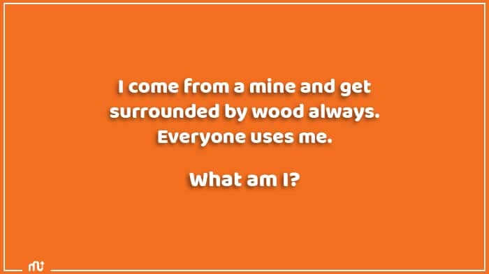
I come from a mine and get surrounded by wood always. Everyone uses me.
What am I?
The answer is to be a pencil lead. It was a confusing one, wasn’t it?
Confusing Logic Problem
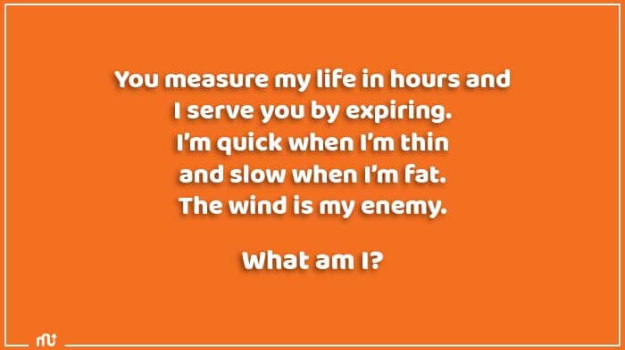
You measure my life in hours and I serve you by expiring. I am quick when I am thin and slow when I am fat. The wind is my enemy.
Can you guess what I am?
To solve logical problems like this one, you need to think out of the bow.
The answer is a CANDLE.
Crack the Code Be a Hero
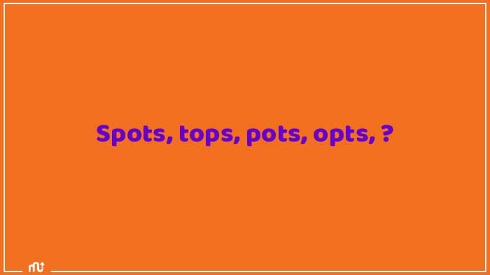
Spots, tops, pots, opts…
Which word logically comes next in this sequence?
Logical thinking puzzles always clear your mind and empower your brain.
The answer is the word stop.
Interesting Logic Question
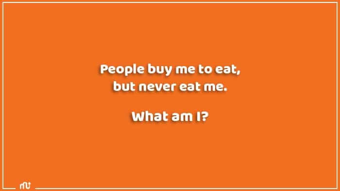
People buy me to eat but never eat me.
What am I?
The answer is a PLATE.
Remember kids logic puzzles that boost mental skills help your children to develop by themselves.
Word Logic Puzzle
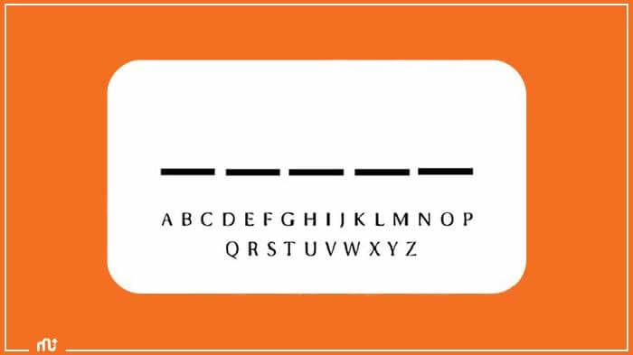
What five-letter word becomes shorter when you add two letters to it?
It was an easy one. Did you guess correctly?
The right answer is short.
Logic Puzzle for Geniuses
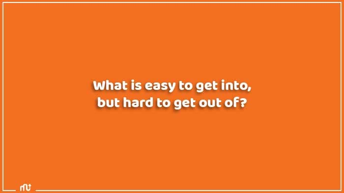
What is easy to get into, but hard to get out of?
Think carefully and try to guess!
The answer is TROUBLE.
Mind-Blowing Logic Question
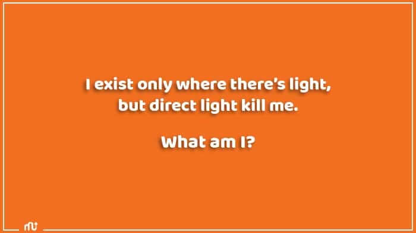
I exist only when there is light but direct light kills me.
Can you answer our logic question correctly?
Logic puzzles online for kids help them to improve their memory.
Did you make up your mind? The answer is to be a shadow.
Online Logic Puzzle
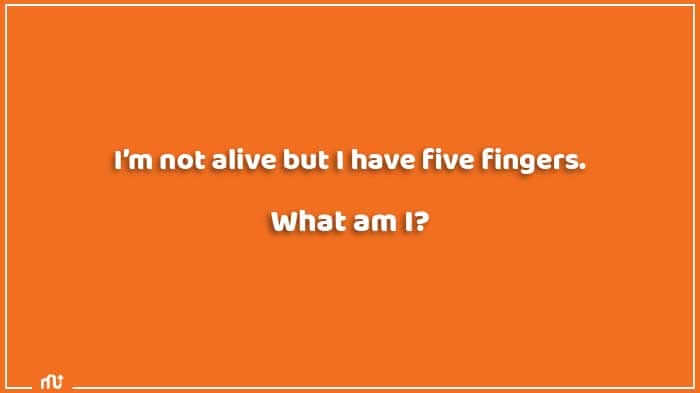
I’m not alive but I have five fingers.
Can you tell us what it is?
We know you could make it. Congrats!
The answer is GLOVE.
Answer the Question Save the Day
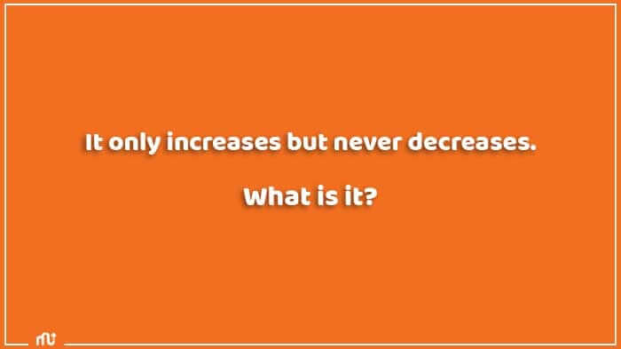
It only increases but never decreases.
Do you think what it is?
If you solve logic problems online on a regular basis, your mental skills get strong.
The right answer is our age.
Eggy Logic Question
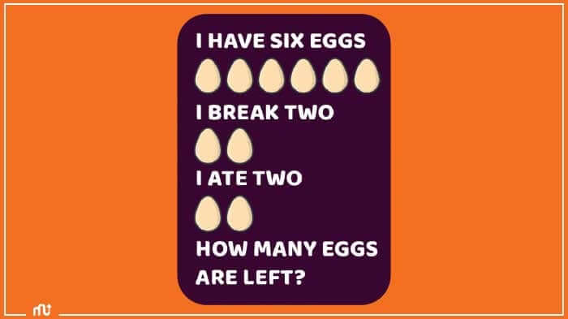
I have six eggs. I break two and I ate two.
Do you think how many eggs are left?
It was a really simple but funny one. We are sure that you would make it.
The answer is to be 4 eggs.
Free Online Logic Puzzle
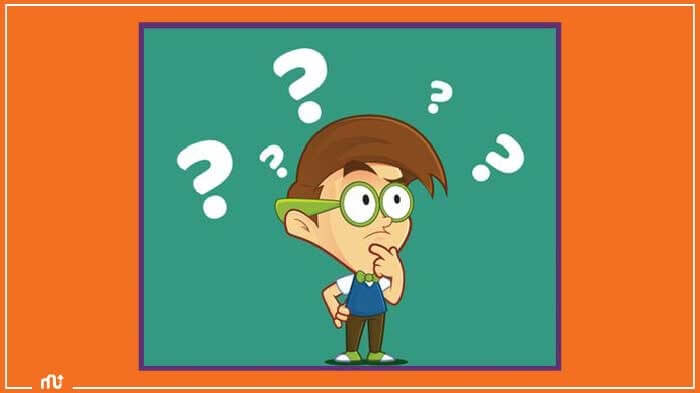
What can you catch but not throw?
It was a tricky one but we are sure that you guessed it right.
The answer is COLD.
Abstract Logic Question
Which month has 28 days?
You need to focus when solving logic problems for kids.
The answer is all months. Because all the months have 28 days.
Logic Puzzle for Sports Lovers
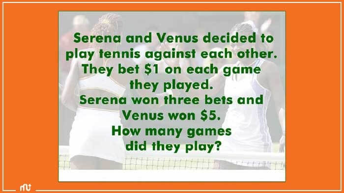
Serena and Venus decided to play tennis against each other. They bet $1 on each game they played. Serena won three bets and Venus won $5.
How many games did they play?
Venus lost three games so she had to win three additional games to break even. Then she had to win five more games to win $5. Therefore, the total number of games is the sum of three and three, and five.
Hence, they played eleven games.
Online Logic Problem
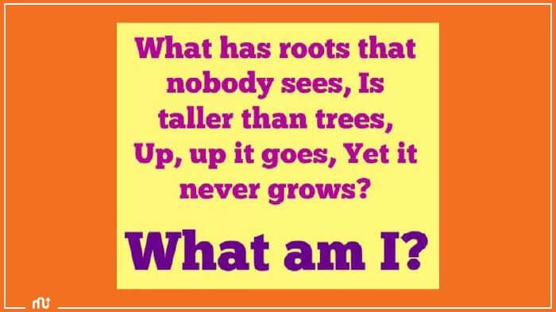
What has roots that nobody sees, is taller than trees, up, up it goes yet it never grows?
Do you think what it can be?
The answer is to be a mountain.
Online Logic Puzzle
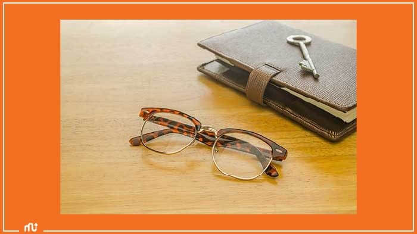
I have keys but no locks. I have space but no room. You can enter but you can’t go outside.
What am I?
The answer is a computer keyboard. Could you guess right?
Congratulations. 🙌
Wordplay Logic Problem
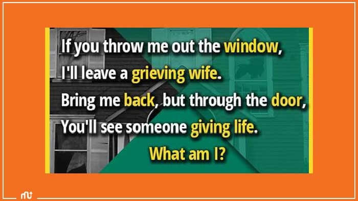
If you throw me out the window, I’ll leave a grieving wife. Bring me back through the door, you’ll see someone giving life.
Can you tell what it is?
Problem-solving puzzles for kids like this one improve their vocabulary.
The answer is the LETTER N. Let us explain why.
If you throw me out the window, I’ll leave a grieving wife: Widow. Bring me back, but through the door, you’ll see someone giving life: Donor.
Sophisticated Logic Question
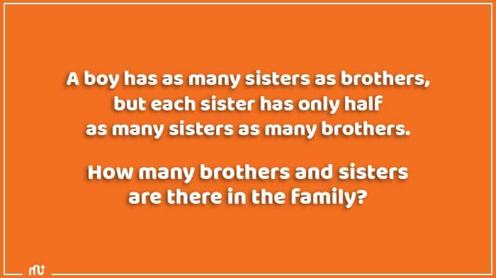
A boy has as many sisters as brothers, but each sister has only half as many sisters as brothers.
How many brothers and sisters are there in the family?
Logic kids questions can be sophisticated sometimes. Be sure to count the sisters and brothers in total and in terms of their own number of siblings. Then the answer gets a little easier.
The answer is four sisters and three brothers.
Time Travel Logic Puzzle
What comes once in a minute, twice in a moment but never in a thousand years?
Hint: Actually, it isn’t so complicated as it sounds. You just need to focus!
Entertaining online logic puzzles for kids boost their concentration skills.
The right answer for this one is the LETTER M.
Language Logic Question
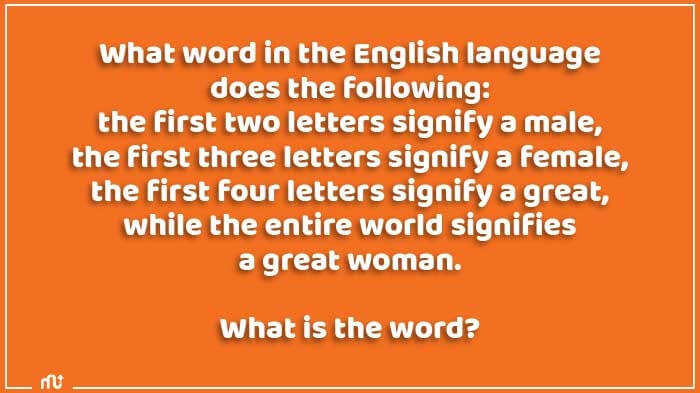
What word in the English language does the following: the first letters signify a male, the first three letters signify a female, the first four letters signify a great while the entire word signifies a great woman.
Can you guess it?
Some online puzzles for kids can be hard to answer. This one gets you thinking about gender and the ways they’re different. But you have to think of one word that holds the others.
It’s easy when you think about it! The answer is HEROINE.
Logic Puzzles for Kids
Logic Puzzles for Kindergartners & Preschoolers
Picture Logic Puzzle
Question: Can you find the hidden dog in the picture?
Find Twin Cats
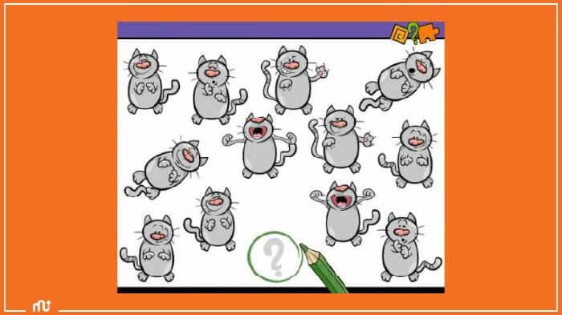
Question: Can you find and show us the twin cats?
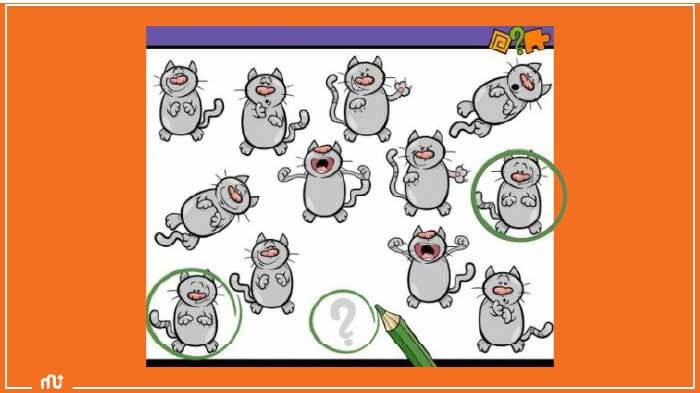
1st Grade Logic Puzzles
Logic Puzzle
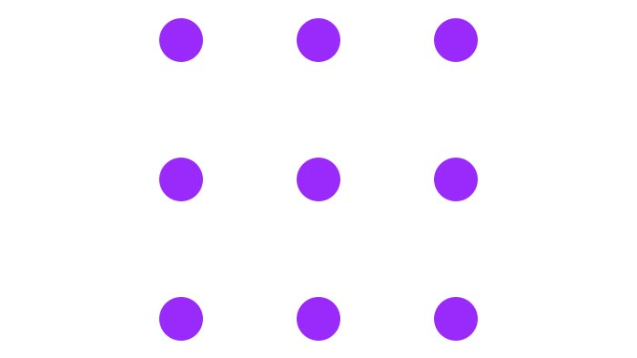
Question: How can you join all the dots using four straight lines and without lifting your pencil?
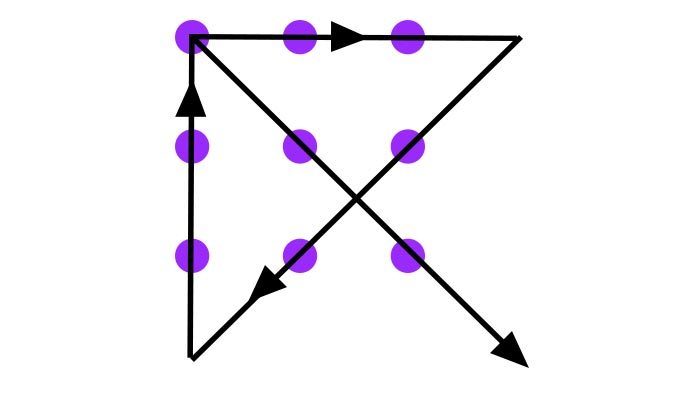
2nd Grade Logic Puzzles
Logic Puzzle for Kids
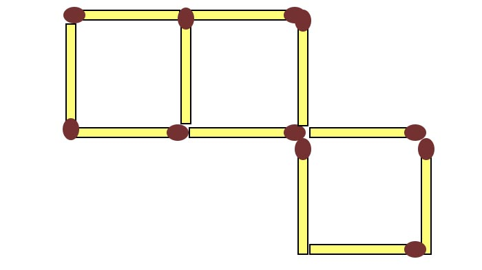
Question: Can you move 3 matches to produce 2 squares?
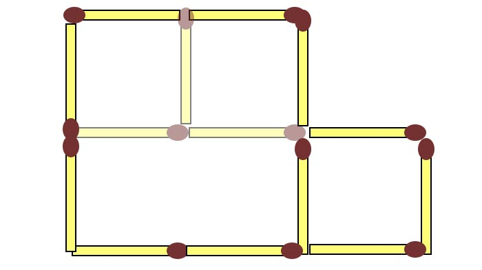
3rd Grade Logic Puzzles
Move the Coins
Question: Can you move only three coins and turn the triangle upside down?
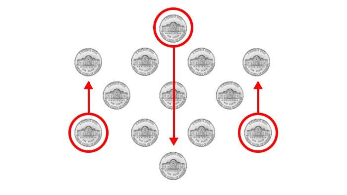
4th Grade Logic Puzzles
4th Grade Logic Problem
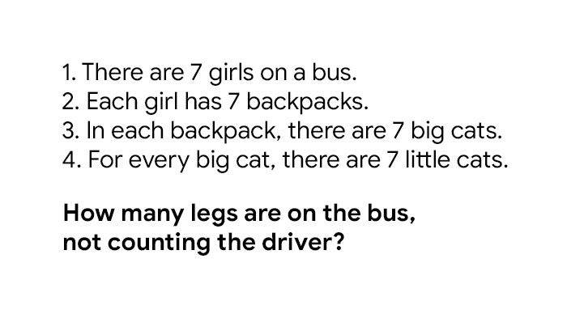
Question: How many legs are on the bus, not counting the driver?
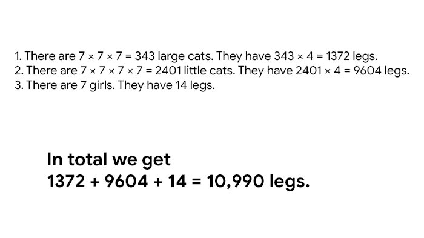
5th Grade Logic Puzzles
Logic Puzzle 5th Grade
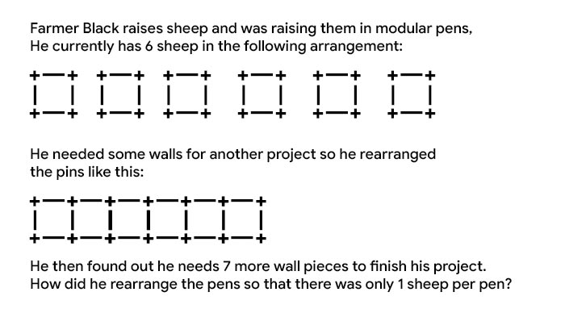
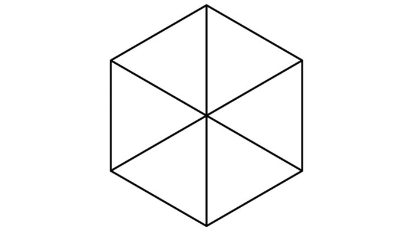
6th Grade Logic Puzzles
Hexagon Problem
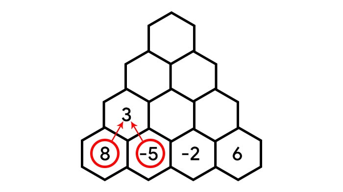
Question: Each hexagon is made by adding up the numbers in the two hexagons below it. Fill in the missing numbers in the puzzle.
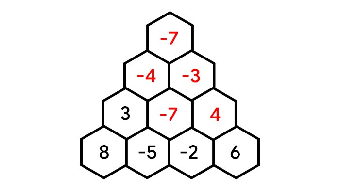
Logic Grid Puzzles
Musical Instruments Logic Grid
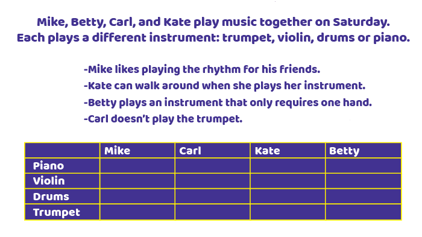
Question: Can you figure out which instruments they play?
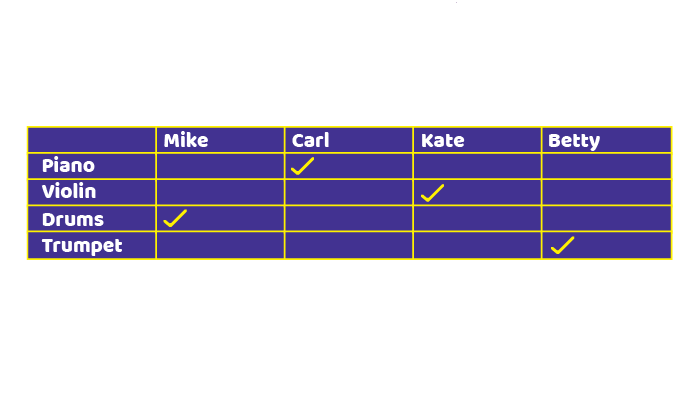
Blocks Logic Grid Puzzle
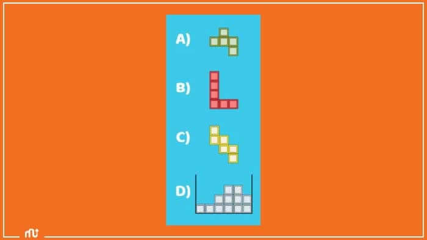
Question: Which one cannot be placed onto D without leaving space beneath?
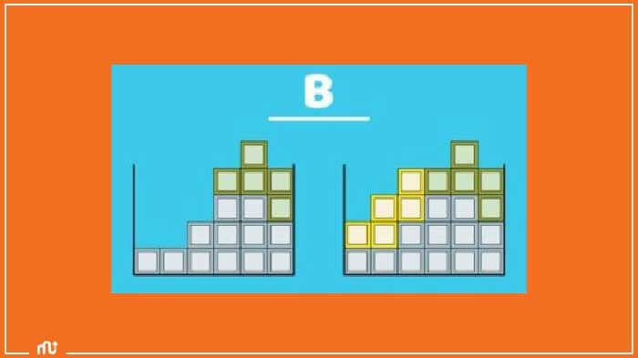
Magical Words Logic Grid
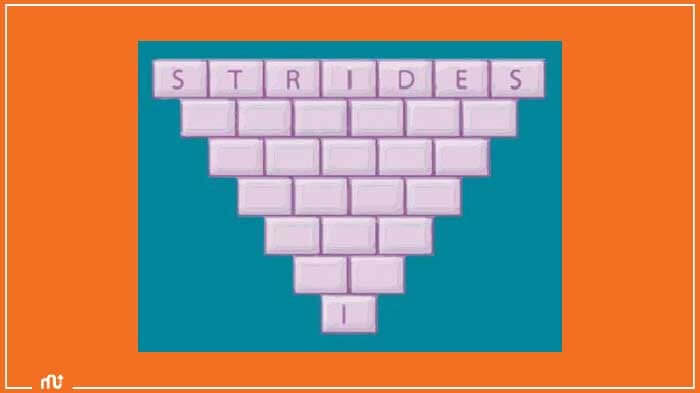
Question: Can you fill in the blanks by using these letters?
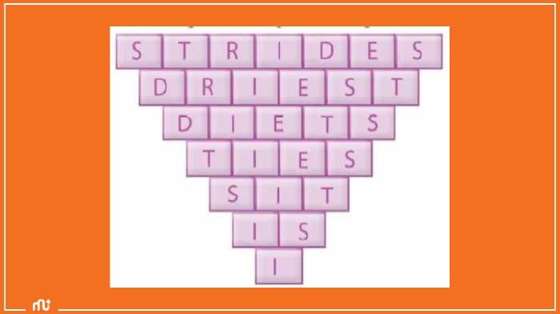
How To Solve Logic Puzzles?
If you like exercising your brain and figuring things out, you might also like these brain words games, math puzzles and riddles, or Tangram puzzles for kids.
MentalUP Logic Puzzles and Games
Trusted by World Leading Communities
We recommend the MentalUP which is developed by academicians and pedagogues and is filled with educational brain teasers.

MentalUP Educational Games will enable your child to use technology in a beneficial way.

MentalUP is an online innovative games resources for teachers and parents.

MentalUP does brain training well. Its games are easy to understand while challenging the skills which they are designed to stretch.

MentalUP is a UK-based award-winning scientific-educational application containing cognitive learning games for K-8 learners.

MentalUP developed by game designers and academics incorporating innovative teaching methods to offer dozens of mind games.

FEATURES OF MENTALUP LOGIC GAMES
- DAILY- PERSONALIZED LOGIC EXERCISES
- MENTAL DEVELOPMENT THROUGH PLAY
- SCIENTIFIC AND EDUCATIONAL
BENEFITS OF MENTALUP
- SUPPORT LOGIC DEVELOPMENT
- IMPROVE MEMORY AND ATTENTION
- DEVELOP VISUAL AND VERBAL SKILLS